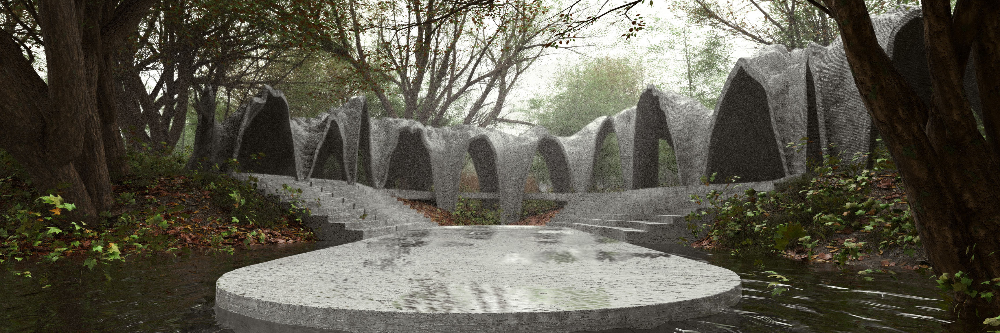
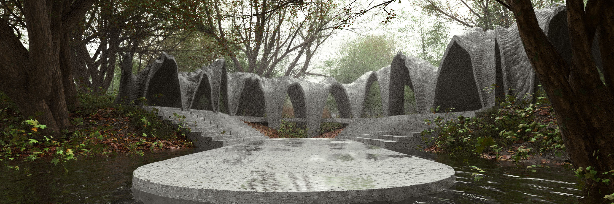
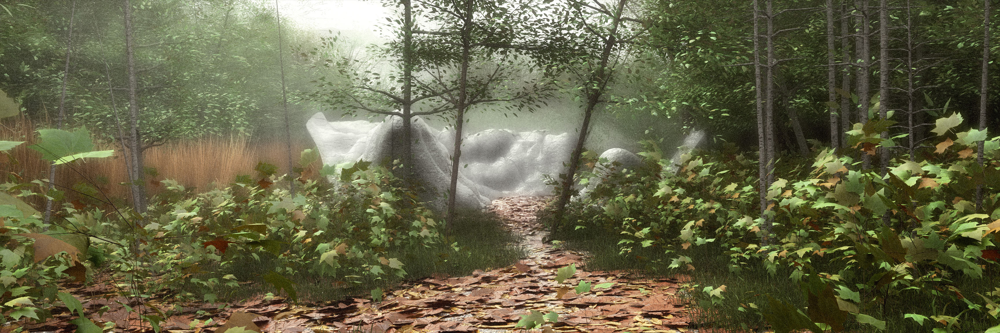
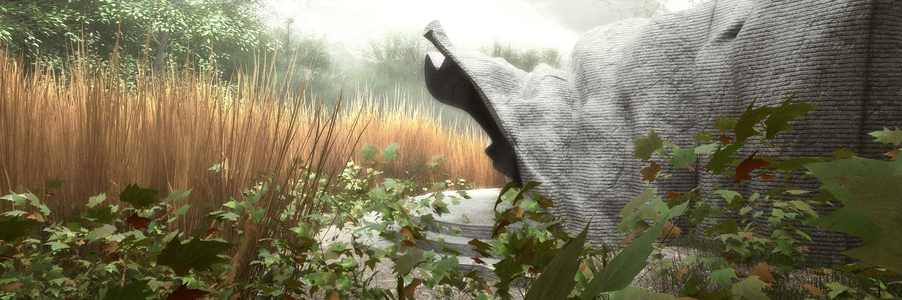
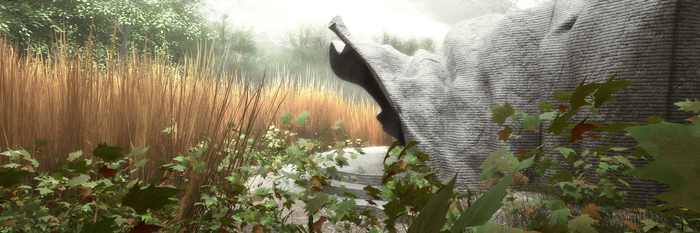
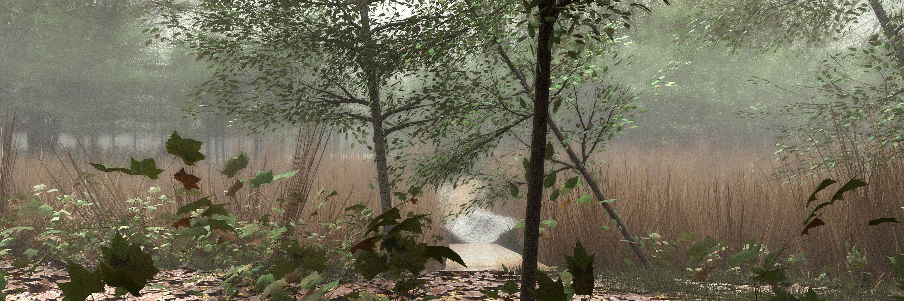
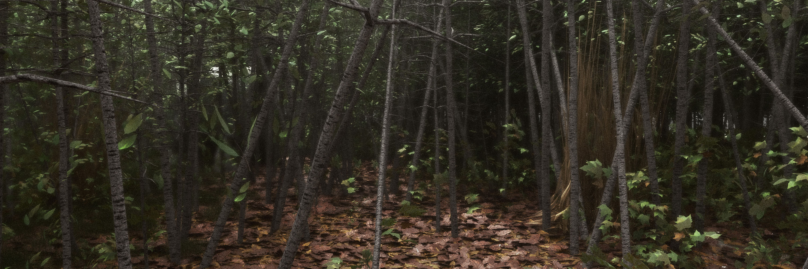
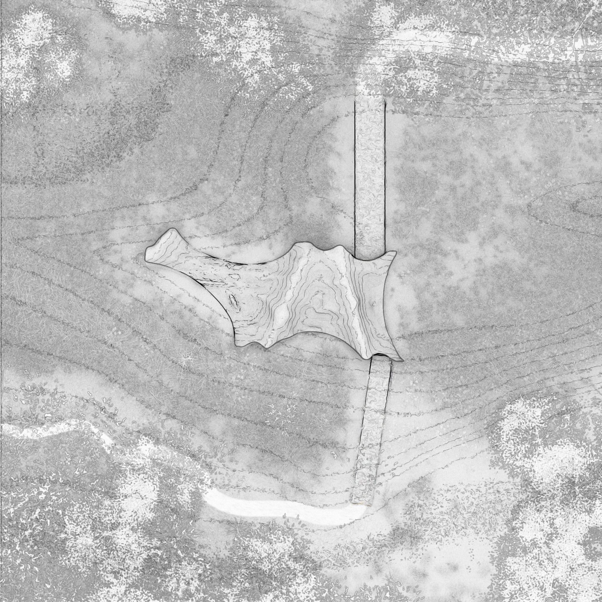
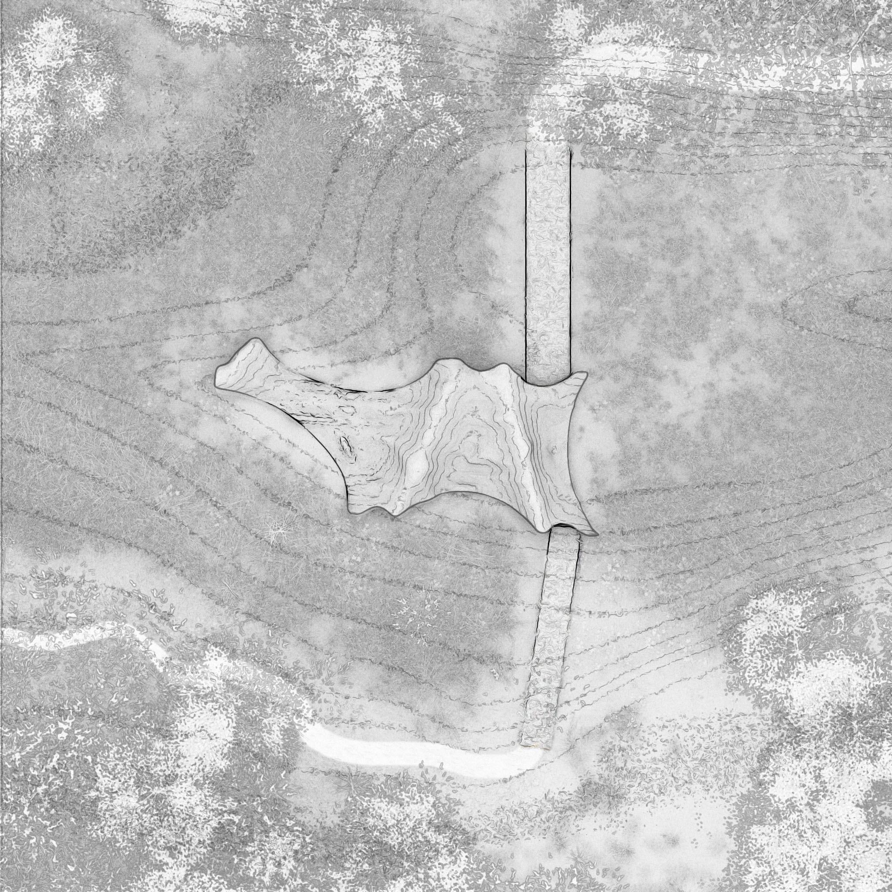

Les différents visages du pavillon principal
Les différents visages du pavillon principal
Le projet s’insère dans un terrain ferroviaire délaissé dans le quartier de Limoilou à Québec. La végétation a repris sa place sur ce territoire, résultant en une friche utilisée par les habitants du quartier. Ce tiers paysage comporte à la fois des sentiers passants et des zones de végétation dense inaccessibles. Le but était de créer un lieu de culte commun utilisant le potentiel du béton imprimé en 3D. L’idée génératrice du projet était donc de marquer cette friche par une intervention architecturale pavillonnaire, qui met en évidence la petitesse du visiteur face à l’indifférence de la nature qu’il traverse : de cette réalisation émerge le moment spirituel.
Une logique de gradation a été utilisée dans chaque facette du projet, d’abord dans la stratégie d’implantation : à partir d’une carte des densités de végétation provenant de notre relevé du site, un parcours linéaire a été isolé, allant d’un environnement accessible (vert) jusqu’à une zone dense et recluse (rouge). Quatre pavillons ont été placés à chaque degré de densité du parcours, allant d’un espace commun destiné à des célébrations jusqu’à un lieu intime propice à la prière ou la méditation individuelle.
La forme de chaque pavillon s’inspire des points marquants de l’ambiance des différents environnements du parcours afin de les mettre en valeur.

Plan d'implantation
La première vue qu’on a de l’espace se présente purement comme une forme caverneuse s'ouvrant devant le visiteur.


 

Le premier pavillon s'apparente à une forme de cloître, centré autour d'une plateforme commune, en dialogue avec la canopée.
 


Le deuxième pavillon se divise en deux espaces, un ouvert sur la forêt et l'autre plus caverneux, cadrant la vue sur le marécage.

Dissimulé parmi les plantes du marécage, le troisième lieu est le seul sans murs. Sa «topographie» le rend accessible uniquement à deux visiteurs, pour des discussions intimes.

Le dernier espace se trouve dans un sous-bois dense. Séparé du monde externe par cette végétation, le visiteur peut méditer en paix.
 
